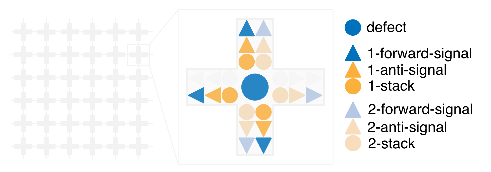

Postdoctoral Researcher in Quantum Information, Technical University of Munich
This page presents illustrative animations of the 2D signal-rule decoders introduced in
Local decoder for the toric code via signal exchange, L. Paletta (2026).
Layout
Each lattice site stores:
Defect (−1 stabilizer outcome)
16 binary variables: 1- and 2-forward-signals, 1- and 2-anti-signals (by cardinal direction)
8 integer variables: 1- and 2-stacks (by cardinal direction)

Local state space
The rule dynamically mediates an effective attractive interaction between defects via the propagation of 1- and 2-forward-signals. Stack and anti-signal dynamics erase forward-signals at the end, ensuring the decoder eventually returns to the zero configuration.
Interactive simulation
Run the decoder step by step. The step j of iteration i is indicated as i.j
(the three anti-signal propagations are all labelled 5).
Arrow keys step through the dynamics, space plays or pauses.
Defects & forward signalsStacks & anti-signals
Legend
A single particle is represented per site, according to the following priority order: